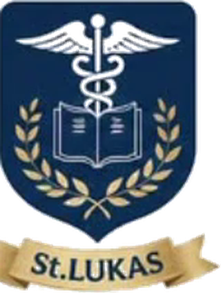

ПРИВАТНО МЕДИЦИНСКО
СРЕДНО УЧИЛИШТЕ
СВ. ЛУКА
ЗА УЧЕНИЦИ ОД 8 И 9 ОДДЕЛЕНИЕ И РОДИТЕЛИ
Отворен
ден
Сабота, 19 декември
од 11 до 14 часот
Пробај ги симулаторите · Запознај ги наставниците
Прашај сè за уписот